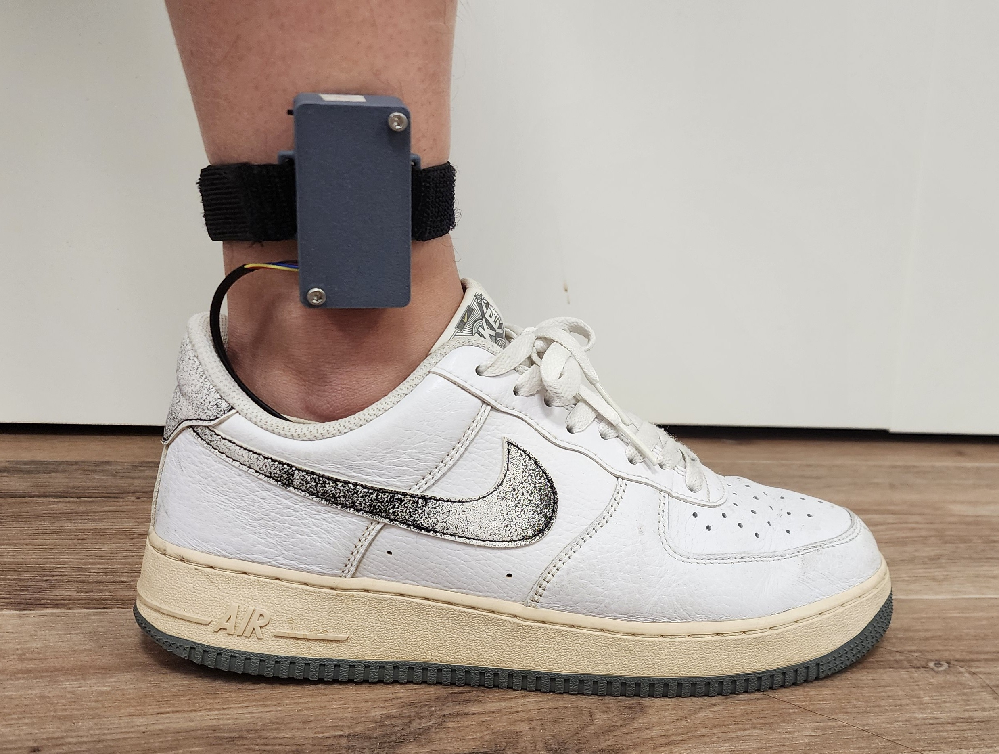
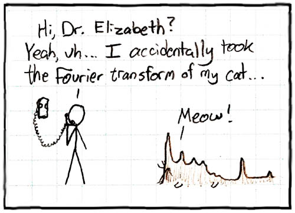

Neuroscience & neural interfaces
Building pathways for the mind to communicate with machines.
I’ve been drawn to neuroscience because it sits at the intersection of biology, computation, and engineering. And because it makes the idea of neural interfaces feel tangible. Ever since I was younger, I’ve dreamed of brain-computer interfaces that let intention translate directly into action on a computer.
Part of that spark came from the stories I grew up with: the ideas behind The Matrix and novels like Sword Art Online introduced me to the idea and possibilities of BCI. Now that I am older, maybe less on the sci-fi fantasy, and more the possibility that neuroscience and BCI can really transform the way we live.

Wearables & sensing systems
I like working on wearable systems because I think thats the bridge where concepts and ideas can become reality. Often times I have ideas that seems perfect on paper, but once it's implemented, tested, everything gets messy, complicated, and noisy. Sometimes I like the challenge, but most of the time it can be frustrating. But ultimately seeing it work makes it worth it.

Signal processing
Making messy data slightly less messy.
A lot of my time goes into building simple, processing chains for EEG, LFP and IMU data, and making sure the stats and plots actually mean what we think they mean and do what we want them to do.
- LFP data processing, IMU data processing and EEG data processing.
- Artifact handling and quality inspections.